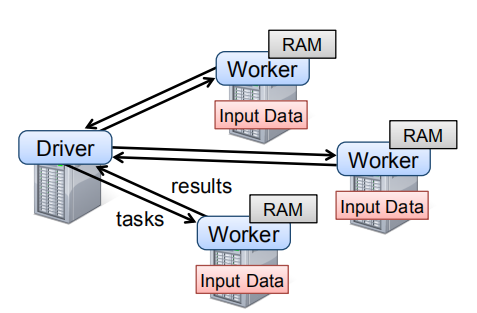
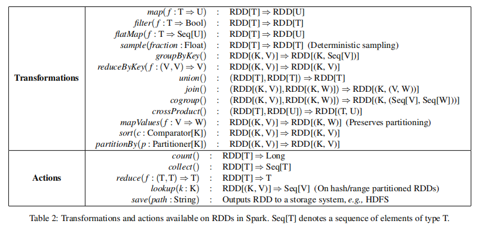
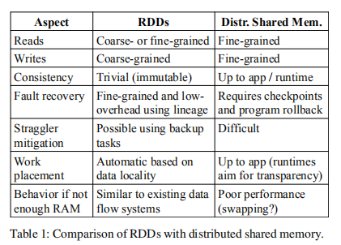
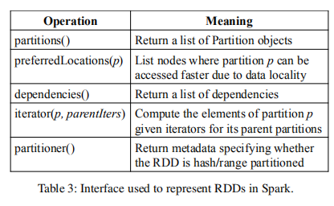
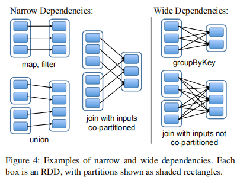
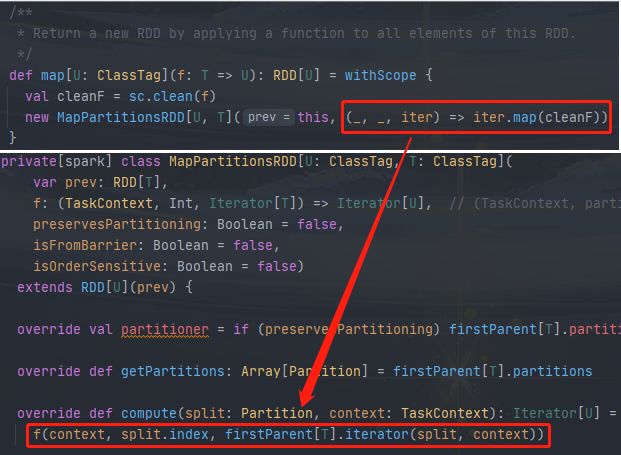
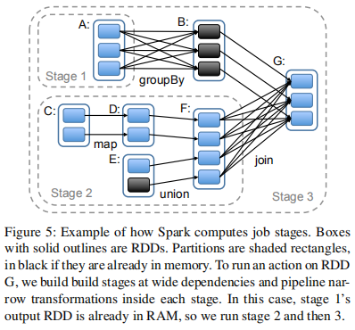

RDD:Resilient Distributed Dataset
RDD，一个只读的弹性分布式数据集，一个由 Spark 提供的分布式内存计算抽象模型。是 Spark 构建的根基。为了深入了解 Spark 的编程模型，学习 Spark ，我们非常有必要了解什么是 RDD。
背景
在 Spark 出现之前，MapReduce 和 Dryad 已经被广泛地应用于大规模数据分析处理中，这两系统允许用户通过一组高级算子来编写分布式计算应用，而不需要担心分布式协作及容错问题。尽管许多框架提供了很多访问集群计算资源的抽象，但它们均缺乏能对分布式内存进行充分利用的抽象模型，这使得它们暴露出了一些问题：
- 由于无法存放计算中间结果，这在许多跨多计算需要重复使用中间结果的应用计算中，变得非常地低效率；
- 它们只能通过将中间结果写入到一个外部外部稳定存储中，以解决中间计算结果的重复利用问题。但这样数据访问也很低效。
为了高效地重复利用中间计算结果，有研究人员为一些需要数据重用的应用专门开发了一些框架，如 Pregel，是一个能将中间数据保存到内存中的迭代式图计算系统，还有 HaLoop，它则提供了迭代式的 MapReduce 接口。尽管它们在某一程度上解决了中间计算计算数据的重用问题，但这些框架都仅适用于特定的计算模式，且数据共享是隐式的，没有通用的数据重用支持。Spark RDD 的到来则打破了这一局面。
RDD
抽象模型
一个 RDD 是一个只读的，分区的数据集，且所有 RDD 仅能从某稳定的数据存储上的数据及其他 RDDs 上执行特定操作来进行创建。为与 RDD 的其他操作区分开来，这些特定操作被称为 transformations （转换算子），e.g. map, filter, join。需要特别指出的是，RDDs 不需要时刻保持具体化（materialized），因为 RDD 拥有足够多的信息关于它从何而来（通过其血缘 lineage）以及如何找到需要计算的数据，包括计算方式。这是 RDD 拥有的一个非常强大的属性，此外，用户还能对 RDD 的持久化和分区方式进行控制，指示 RDD 是否需要被重用，并指定其存储策略。
编程接口
Spark 和 DryadLINQ 及 FlumeJava 类似，同样通过集成编程语言 API 来暴露 RDDs，每个数据集 RDD 表示为一个对象，用户可以通过调用对象的方法来执行相应的转换(transformation)及动作(action)操作。
为使用 Spark，用户需要编写连接 workers 的驱动程序，在该驱动程序中定义一个或多个 RDDs，并在它们之上执行 transformations 以及 actions。RDD 的一般编程模式如下：
- 创建 RDD: 可从稳定的数据存储或现有的其他 RDDs，使用 transformation 转换算子来进行创建；
- 操作 RDD: 对于创建的 RDDs，可以继续执行 transformations 或 actions 操作；
- 其他：此外，用户还可以通过调用
persist方法来指示该 RDD 在未来操作中将需要被重用。
Driver 节点上 Spark 还负责跟踪 RDDs 的血缘关系（lineage）。Workers 则作为长期运行的进程，能根据操作需要，将 RDD 的分区存储到 RAM 内存中。

优点及局限性
为展示 RDD 模型作为一个分布式内存抽象的优点，文章将其与分布式共享内存 (Distributed shared memory, DSM) 进行了对比，见下表。在 DSM 系统中，应用可在全部地址空间中，对任意位置进行读写。DSM 是一个非常泛化的抽象，但它的泛化性（generality）反而使得我们很难用它实现在商用集群上实现高效的容错方案。

尽管 RDD 抽象模型有诸多优点，但也有它应付不来的应用类型。首先，RDDs 非常适合那些在一个数据集上执行同一操作的批处理应用。在这种情况下，RDDs 可以使用一个血缘图（lineage graph）高效地记住每一个 transformation，当分区丢失时，也不需要对大量的数据进行处理。
RDDs 不适合需要异步细粒度共享状态更新的应用，如 Web 应用或增量 Web 爬虫的存储系统。对于这些应用，使用执行传统日志更新及数据 checkpoint 的系统可能更高效，如数据库，RAMCloud, Percolator 以及 Piccolo。RDD 模型的设计目标是为批处理分析提供一种高效的编程模型。
RDD in Spark
表示
RDD 抽象的表示，其面对的最大挑战是在提供丰富的 transformations 以及 actions 算子操作供用户任意组合的同时，还需要能在大量的 transformations 跟踪 RDD 的血缘（lineage）。为实现这些目标，Spark 选择了一种基于图的 RDD 表示方式，其中，每个 RDD 均使用一个通用的接口进行表示，主要包含五类信息：一组分区（a set of partitions）、一组父 RDD 的依赖（a set of dependencies）、一个基于父 RDD 计算数据集的函数（a function）、分区模式的元数据（metadata about its partitioning schema）以及数据存放位置信息（data placement）。

这些信息在 Spark 实现中的具体接口见上图。
另外，值得一提的是，该接口用于表示 RDDs 间依赖关系的设计是一个非常有趣的问题，它将依赖划分成了窄依赖（narrow dependencies）以及宽依赖（wide dependencies）。其中，窄依赖指一个父 RDD 的每一个分区只能被其子 RDD 的某一个分区所使用，而对于宽依赖，则多个子 RDD 分区可依赖于同一个父 RDD 分区。常见地，map, filter, union 都是窄依赖，而 join 则是宽依赖（父 RDD 没有进行 hash 分区的情况下）。将依赖进行这样划分的原因主要有两：
- 窄依赖可以在单个集群节点上以流水线方式执行，计算所有父 RDD 的分区；
- 节点故障后，窄依赖的恢复更高效，只需重新计算丢失的父 RDD 分区，且能在不同节点上以并行的方式进行计算，而对于宽依赖，可能单个节点的故障，会导致某 RDD 的祖先 RDD 的部分分区丢失，使得必须完全重新计算。

一些 RDD 实现的简单描述：
HDFS 文件： 对于这些 RDDs，partitions 方法返回分区，其中每一个分区对应 HDFS 文件的一个 block 块（块的 offset 信息也包含在 Parttion 对象中），preferredLocations 方法给出这些块所处的节点，而 iterator 方法则用于读取这些块数据。
map: 在任意 RDD 上调用 map 方法，会返回一个 MappedRDD 对象。该对象的分区及首选位置（preferred locations）与其父 RDD 一样，但会在 iterator 方法中对其父 RDD 的数据执行传入给 map 的函数。

union: 在两个 RDDs 上调用 union 方法，则返回一个 RDD，其分区是两个父 RDD 分区的组合，RDD 的每个分区均通过其父 RDD 的窄依赖对应分区进行计算；
sample: 取样 sample 方法和 map 的实现类似，只不过 RDD 会为每一个分区存储一个随机数据生成种子，以决定对父 RDD 数据记录的取样；
join: 两个 RDDs 的 join 可能导致两个窄依赖（如果父 RDD 都是使用相同分区器 partitioner 进行 hash/range 分区的话），也可能导致两个宽依赖，或混合的形式（即一个父 RDD 有 partitioner，一个没有）。但不管是哪种情况，输出的 RDD 都会有一个 partitioner（要么继承于父 RDD，要么使用默认的 hash partitioner）。
RDDs 的这一通用接口，使得 Spark 能以少于 20 行的代码实现大多数 transformations，即便是 Spark 的新用户也能在不了解调度器（scheduler）细节的情况下，实现新的 transformations。
实现
最初，Spark 使用 14,000 行 scala 代码实现。系统运行于 Mesos 集群资源管理器之上，能与 Hadoop， MPI 及其他应用进行资源共享。每个 Spark 应用均作为一个单独的 Mesos 应用运行，拥有自己的 Driver 及 Workers，应用间的资源共享则由 Mesos 负责进行管理。
1. 作业调度 - Job Scheduling
总体上看，Spark 的调度器实现与 Dryad 类似，不同的是，但 Spark 的实现对持久化 persist RDDs 进行了考虑，使它们存放到内存中。当用户在一个 RDD 上执行一个 action （e.g. count）时，调度器会检查该 RDD 的血缘图，然后构建一个 stages 的 DAG 进行执行，如下图。

每个 stage 会包含尽可能多的窄依赖的流水线转换算子。stages 之间的边界由宽依赖所需的 shuffle 操作来进行定义。任何已计算的分区都能短路（short circuit，与很多编程语言中的逻辑运算类似）其父 RDD 的计算。对于每一个 stage，调度器会启动任务来计算确实的分区，直到目标 RDD 计算完成。调度器 scheduler 采用这样的任务分配策略，基于局部性原理，使用延迟调度（delay scheduling）：
- 如果一个任务 task 需要处理在某一节点内存中的分区，那么调度器会将该任务发送至该节点上；
- 如果一个任务 task 处理的分区中，有其所属 RDD 给出的偏好位置（preferred locations），则调度器会将该任务发送到这些位置上。
而对于宽依赖，当前 Spark 会在持有父 RDD 分区的节点上存储具体化的中间结果，以简化故障恢复，这和 MapReduce 的 map 任务输出的存储类似。
当任务执行失败时，只要 stage 的父 stage 仍存活，则会将该任务交由其他节点重新运行。如果任务中的某些 stages 处于不可用状态（e.g. shuffle 的 “map 端“ 输出丢失），则会重新提交任务，并以并行的方式重新执行该任务。
2. 内存管理
Spark 为 RDDs 的持久化存储提供了三种选择：
- 以反序列化 Java 对象的形式进行内存化存储；
- 以序列化数据的形式进行内存化存储；
- 磁盘数据存储。
其中，第一种方案可提供最快的性能，因为 JVM 可直接每一个 RDD 的元素。第二种方案则给用户提供了一种对内存存储更友好的数据表示方式，但相应地性能也将会有所下降。当 RDDs 太大以至于无法维持在 RAM 内存中时，第三种方案将有所帮助，但 RDDs 重新计算的开销也很大。
为了管理有限的可用内存，Spark 使用了 LRU (least-recently used) 策略来回收 RDDs，当一个新的 RDD 分区计算完成，但没有足够内存进行存储时，Spark 将会回收最近访问过的 RDD 的一个分区，除非该访问过的 RDD 也包含新计算完成的分区。
3. 对 Checkpoint 的支持
出现故障时，尽管 RDD 血缘关系可用于恢复 RDDs，但当 RDDs 拥有一个长血缘关系链时，恢复时间将非常长。因此，此时把某些 RDDs checkpoint 持久化到稳定的存储系统中，将会有所帮助。
通常情况下，checkpointing 对于那些包含宽依赖，且拥有长血缘关系链的 RDDs 非常有用。如果不这么做的话，将很有可能需要 RDDs 依赖链重头完全计算。相反地，对于那些数据存放于稳定存储中，且包含窄依赖的 RDDs 来说，checkpointing 可能作用就不大了。
Spark 当前提供了一个 checkpointing 的 API （通过 persist() 方法），但将把什么数据进行 checkpoint 的选择决策留给了用户。然而，现也早已有关于如何执行自动 checkpoint 的研究， e.g. ASC。因为调度器是知道每个数据集的大小以及第一次计算该数据集所需时间等信息的，这使得选择一组最优 RDDs 集合进行 checkpoint，以减少整体应用的系统恢复时间，成为可能。
需要特别指出的是，由于 RDD 是只读的，这使得 RDD 的 checkpoint 操作，与一般的共享内存模型要简单得多。
总结
本文是在笔者阅读完 Spark RDD 其论文[1]后，做的一些简单总结，原文还包含了更多详细内容，如有需要请阅读论文原文，如发现本文有误，请联系我，谢谢！最后，作为结尾，我用 Spark RDD 编程模型实现大数据世界中的 HelloWorld - WordCount 吧！
1 | object WordCountApp { |
References
- Resilient distributed datasets: a fault-tolerant abstraction for in-memory cluster computing
- https://spark.apache.org/research.html